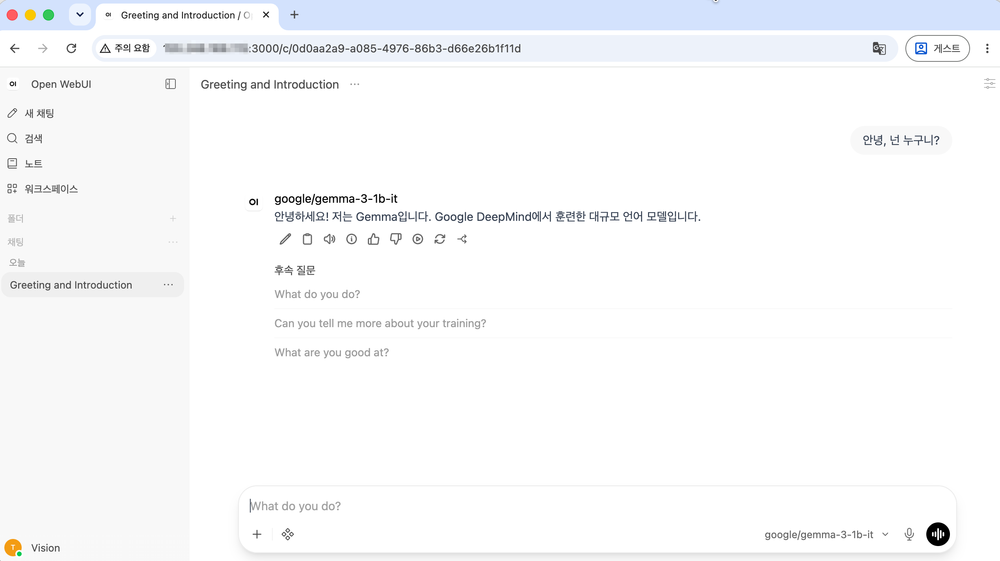

Compute VM에서 CPU 기반 AI 추론 모델 테스트
CPU 추론은 하드웨어 예산이 제한적이거나, 높은 처리량의 실시간 예측이 필요하지 않은 작은 규모 애플리케이션에서 시도해 볼 수 있는 방법입니다. 문서 검색 및 요약, 고객 지원 챗봇, 엣지 디바이스 분석 등에 시도해 볼 수 있는 방법입니다.
당연히 작은 사이즈 모델을 사용해야 겠지만, 그래도 어느 정도의 성능, 감내할 만한 응답 속도, 동시 접속 유저수 등을 확인하는 작업이 필요해 보입니다. 여기서는 x86기반 CPU에서 제공하는 AVX2/AVX-512와 같은 기술을 이용하여, OCI에서 CPU 기반 AI 추론 성능이 어느 정도 나오는 지를 확인해 보고자 합니다.
테스트할 Compute VM 준비
비교를 위해 OCI에서 8 OCPU, 64 GB 기준, Intel/AMD 기반 CPU를 사용하여 VM을 생성하였습니다.
- OS: Oracle Linux 9.8
- Shape:
- VM.Standard3.Flex으로 시작
- 성능 비교를 위해 Intel 최신 CPU(VM.Standard4.Ax.Flex), AMD CPU(VM.Standard.E6.Flex, VM.Standard.E6.Ax.Flex)는 추가로 테스트
- 용량: 8 OCPU(16vCPU), 64 GB
- m8i.4xlarge, m7i.4xlarge의 16 vCPU, 64 GiB에 맞춘 구성
- 테스트 후, 메모리 사용량은 확인후 비용을 고려하여 최적화할 수 있음
- Boot Volume: 200 GB
vLLM 설치
vLLM 설치가이드에 따라 설치합니다.
-
설치가이드에 따라 Python: 3.10 – 3.13 버전을 설치합니다.
sudo dnf install python3.12 -
uv 설치
curl -LsSf https://astral.sh/uv/install.sh | sh -
Python 환경 생성
uv venv --python 3.12 --seed --managed-python source .venv/bin/activate -
OS 업데이트 및 필요한 컴파일러 g++를 설치합니다.
sudo dnf update sudo dnf install -y gcc-c++ numactl-devel g++ --version -
설치된 glibc 버전이 2.34입니다. vllm 0.29를 설치합니다. 최신버전인 vllm 0.30은 glibc 버전 문제로 설치시 오류가 발생하였습니다.
$ getconf GNU_LIBC_VERSION glibc 2.34 -
설치
# use pip pip install \ "https://github.com/vllm-project/vllm/releases/download/v0.29.0/vllm-0.29.0+cpu-cp38-abi3-manylinux_2_34_x86_64.whl" \ --extra-index-url https://download.pytorch.org/whl/cpu -
LD_PRELOAD에 Intel OpenMP 추가:
sudo find / -iname *libiomp5.so결과값이 없어, 아래와 같이 수동 설치# vLLM을 설치한 동일한 venv를 활성화한 상태에서 pip install intel-openmp IOMP_PATH=$(find "$VIRTUAL_ENV" -type f -name 'libiomp5.so' -print -quit) echo "$IOMP_PATH" export LD_PRELOAD="${IOMP_PATH}${LD_PRELOAD:+:$LD_PRELOAD}" -
설치 확인
$ vllm --version WARNING 09-22 06:16:52 [importing.py:45] Triton is installed, but doesn't include CPU backend. Disabling Triton. INFO 09-22 06:16:52 [importing.py:74] Triton is installed but 0 active driver(s) found (expected 1). Disabling Triton to prevent runtime errors. INFO 09-22 06:16:52 [importing.py:98] Triton not installed or not compatible; certain GPU-related functions will not be available. 0.29.0+cpu $ python -c "import vllm, torch; print(vllm.__version__); print(torch.__version__)" 0.29.0 2.13.0+cpu
vLLM 서버 시작
-
Hugging Face에서 Read 권한 토큰을 만든 뒤 로그인 합니다.
hf auth login -
추가적으로 대상 모델은 사용하기 LICENSE AGREEMENT에 대해 동의가 필요합니다. 사이트에 접속해 관련 내용을 수행합니다.
-
google/gemma-3-1b-itt 모델로 서버를 시작합니다.
export VLLM_CPU_KVCACHE_SPACE=8 export VLLM_CPU_NUM_OF_RESERVED_CPU=1 vllm serve google/gemma-3-1b-it \ --dtype bfloat16 \ --max-model-len 4096 -
모델 리스트를 조회합니다.
curl -s http://localhost:8000/v1/models | jq .-
결과 예시
{ "object": "list", "data": [ { "id": "google/gemma-3-1b-it", "object": "model", "created": 1791438278, "owned_by": "vllm", "root": "google/gemma-3-1b-it", "parent": null, "max_model_len": 4096, "permission": [ ... ] } ] }
-
-
새 터미널에서 호출이 되는 지 확인합니다.
curl -s http://localhost:8000/v1/chat/completions \ -H "Content-Type: application/json" \ -d '{ "model": "google/gemma-3-1b-it", "messages": [ {"role": "user", "content": "What is the capital of South Korea?"} ] }' | jq .-
결과 예시
{ ... "model": "google/gemma-3-1b-it", "choices": [ { "index": 0, "message": { "role": "assistant", "content": "The capital of South Korea is **Seoul**.\n", ... }, ... } ], ... }
-
Advanced Vector Extensions (AVX), Advanced Matrix Extensions (AMX) 지원 여부 및 사용 여부 확인
-
CPU flag 체크
lscpu | grep -Ei 'avx512f|avx2|amx' -
vllm 서버 로그에서 Worker의 pid를 확인합니다. 예, 82911
(Worker pid=82911) INFO 09-22 09:03:57 [cpu_worker.py:255] Explicitly set (8.0/62.27) GiB for KV cache on node 0. -
새 터미널에서 다음 명령을 실행합니다.
sudo perf stat -p <Worker_PID> \ -e fp_arith_inst_retired.vector,\ fp_arith_inst_retired.256b_packed_single,\ fp_arith_inst_retired.512b_packed_single,\ fp_arith_inst_retired.512b_packed_double \ -- sleep 30 -
새 터미널에서 지속적으로 요청합니다.
while true; do curl http://localhost:8000/v1/chat/completions \ -H "Content-Type: application/json" \ -d '{ "model": "google/gemma-3-1b-it", "messages": [ {"role": "user", "content": "What is the capital of South Korea?"} ] }' > /dev/null done -
perf stat 다음과 같은 결과를 볼 수 있습니다.
-
Intel CPU - AVX 지원 CPU 기준, 예, VM.Standard3.Flex(OCI X9 with Intel Xeon 3)
$ sudo perf stat -p 10210 \ -e fp_arith_inst_retired.vector,\ fp_arith_inst_retired.256b_packed_single,\ fp_arith_inst_retired.512b_packed_single,\ fp_arith_inst_retired.512b_packed_double \ -- sleep 30 Performance counter stats for process id '10210': 3,299,170,832 fp_arith_inst_retired.vector 21,528,426 fp_arith_inst_retired.256b_packed_single 3,277,423,632 fp_arith_inst_retired.512b_packed_single 0 fp_arith_inst_retired.512b_packed_double 30.004479368 seconds time elapsed- 결과에서 AVX를 사용하는 것을 확인할 수 있습니다.
카운터 0보다 크면 의미 fp_arith_inst_retired.vector벡터 FP 연산 사용 fp_arith_inst_retired.256b_packed_singleAVX/AVX2 256-bit FP 연산 사용 fp_arith_inst_retired.512b_packed_singleAVX-512 512-bit FP 연산 사용 fp_arith_inst_retired.512b_packed_doubleAVX-512 512-bit double FP 연산 사용
- 결과에서 AVX를 사용하는 것을 확인할 수 있습니다.
-
Intel CPU - AMX 지원 CPU 기준, 예, VM.Standard4.Ax.Flex(OCI X12 with Intel Xeon 6)
sudo perf stat -p <Worker_PID> \ -e exe.amx_busy,cycles,instructions \ -- sleep 30- 결과에서 AMX를 사용하는 것을 확인할 수 있습니다.
카운터 0보다 크면 의미 exe.amx_busyAMX 타일 연산 장치가 실제 연산 중이었던 CPU 사이클 수
- 결과에서 AMX를 사용하는 것을 확인할 수 있습니다.
-
AMD CPU 기준 - AVX만 지원함, 예, VM.Standard.E6.Flex, VM.Standard.E6.Ax.Flex
$ sudo perf stat -p 6061 \ -e fp_ops_retired_by_width.pack_128_uops_retired,\ fp_ops_retired_by_width.pack_256_uops_retired,\ fp_ops_retired_by_width.pack_512_uops_retired,\ fp_ops_retired_by_width.scalar_uops_retired \ -- sleep 30 Performance counter stats for process id '6061': 17,907,052,184 fp_ops_retired_by_width.pack_128_uops_retired 571,635,321 fp_ops_retired_by_width.pack_256_uops_retired 74,804,451,060 fp_ops_retired_by_width.pack_512_uops_retired 7,676,075,731 fp_ops_retired_by_width.scalar_uops_retired 30.002445660 seconds time elapsed
-
LLM 서빙 성능 평가
여기서는 vllm 프로젝트에서 제공하는 LLM 성능 평가 도구인 GuildeLLM을 사용하여, 성능을 평가합니다.
-
GuideLLM을 설치합니다.
pip install guidellm -
벤치마크를 위해 다음 명령을 실행합니다.
max_length=100조건에 맞춰 token 수를 가정streams로 동시 요청수, 배치 사이즈 지정
guidellm run \ --backend kind=openai_http,target=http://localhost:8000 \ --profile kind=concurrent,streams=1,warmup=5,cooldown=5 \ --constraint kind=max_duration,seconds=120 \ --data kind=synthetic_text,prompt_tokens=16,output_tokens=84 -
전체 결과 중 일부 항목입니다.
- 요청에 대한 결과까지 시간(Request Latency), 첫 글자가 보이기까지 시간(TTFT), 이후 생성되는 토큰 간 간격(ITL), 출력 처리량(Output Tokens Per Sec)
- 전체 응답(Request Latency)까지 5초 걸리며, UI가 스트리밍 모드라면, 첫 응답토큰(TTFT)을 받는 데 0.3초가 걸렸습니다.
- VM의 고정비용이 나가지만, 일반적인 LLM 서비스에서는 비용 계산시 사용되는 항목으로 보면 Output Tokens Per Sec로 비용을 산정해 볼 수 있습니다.
ℹ Request Latency Statistics (Completed Requests) |============|=========|========|=======|=======|=======|=======|======|======|======|======| | Benchmark | Request Latency || TTFT || TTFOT || ITL || TPOT || | Strategy | Sec || ms || ms || ms || ms || | | Mdn | p95 | Mdn | p95 | Mdn | p95 | Mdn | p95 | Mdn | p95 | |------------|---------|--------|-------|-------|-------|-------|------|------|------|------| | concurrent | 5.0 | 5.0 | 305.4 | 309.9 | 305.4 | 309.9 | 56.5 | 56.9 | 59.5 | 59.9 | |============|=========|========|=======|=======|=======|=======|======|======|======|======| ℹ Server Throughput Statistics (All Requests) |============|=======|======|=========|==============|===============|==============| | Benchmark | Requests ||| Input Tokens | Output Tokens | Total Tokens | | Strategy | Concurrency || Per Sec | Per Sec | Per Sec | Per Sec | | | Mdn | Mean | Mean |||| |------------|-------|------|---------|--------------|---------------|--------------| | concurrent | 1.0 | 1.0 | 0.2 | 4.8 | 16.8 | 21.6 | |============|=======|======|=========|==============|===============|==============|
LLM 서빙 성능 평가 결과
테스트 환경에 따라 결과치는 달라질수 있습니다. 단순 참조용입니다.
google/gemma-3-1b-it
- 실요청 Input 토큰: 24
- 실응답 Output 토큰: 84
| shape | streams | dtype | p95 Request Latency (초) (답변 전체 시간) |
p95 TTFT (ms) (첫 글자가 보이기까지) |
p95 ITL (ms) (생성 중 토큰 간 간격) |
Output Tokens / 초 (출력 처리량) |
|---|---|---|---|---|---|---|
| VM.Standard3.Flex | 1 | bfloat16(AVX) | 5.0 | 309.9 | 56.9 | 16.8 |
| 8 | 17.6 | 1551.5 | 205.5 | 38.5 | ||
| 32 | 62.9 | 5272.5 | 744.8 | 44.3 | ||
| VM.Standard4.Ax.Flex | 1 | bfloat16(AMX) | 3.6 | 88.6 | 42.2 | 23.6 |
| 8 | 5.2 | 180.1 | 60.4 | 131.1 | ||
| 32 | 10.6 | 406.7 | 124.6 | 254.4 | ||
| VM.Standard.E6.Flex | 1 | bfloat16(AVX) | 2.9 | 50.0 | 34.5 | 29.1 |
| 8 | 4.7 | 180.8 | 55.6 | 143.1 | ||
| 32 | 10.4 | 599.0 | 122.1 | 258.0 | ||
| VM.Standard.E6.Ax.Flex | 1 | bfloat16(AVX) | 3.9 | 101.6 | 46.4 | 21.4 |
| 8 | 5.6 | 202.7 | 65.8 | 120.2 | ||
| 32 | 12.9 | 633.6 | 151.1 | 221.6 |
| shape | streams | Output Tokens / 초 (출력 처리량) |
OCPU 시간당 단가 ($) |
메모리 GB 시간당 단가 ($) |
8 OCPU / 64 GB 시간당 단가 ($) |
$ per 1M token 1백만 토큰 당 비용($) |
|---|---|---|---|---|---|---|
| VM.Standard3.Flex | 1 | 16.8 | 0.0400 | 0.0015 | 0.4160 | 6.8783 |
| 8 | 38.5 | 0.0400 | 0.0015 | 0.4160 | 3.0014 | |
| 32 | 44.3 | 0.0400 | 0.0015 | 0.4160 | 2.6085 | |
| VM.Standard4.Ax.Flex | 1 | 23.6 | 0.0119 | 0.0114 | 0.8248 | 9.7081 |
| 8 | 131.1 | 0.0119 | 0.0114 | 0.8248 | 1.7476 | |
| 32 | 254.4 | 0.0119 | 0.0114 | 0.8248 | 0.9006 | |
| VM.Standard.E6.Flex | 1 | 29.1 | 0.0300 | 0.0020 | 0.3680 | 3.5128 |
| 8 | 143.1 | 0.0300 | 0.0020 | 0.3680 | 0.7143 | |
| 32 | 258.0 | 0.0300 | 0.0020 | 0.3680 | 0.3962 | |
| VM.Standard.E6.Ax.Flex | 1 | 21.4 | 0.0138 | 0.0108 | 0.8016 | 10.4050 |
| 8 | 120.2 | 0.0138 | 0.0108 | 0.8016 | 1.8525 | |
| 32 | 221.6 | 0.0138 | 0.0108 | 0.8016 | 1.0048 |
- 비용 계산 - $ / 1M output tokens = (8 OCPU / 64 GB 시간당 단가) / (Output Tokens/초 * 3600초) * 1,000,000
- 예, VM.Standard.E6.Flex, stream=32 비용 계산하면 (0.3680) / (258.0 * 3600) * 1,000,000=0.3962
Open WebUI VM 구성
https://github.com/open-webui/open-webui?tab=readme-ov-file#how-to-install-
-
public subnet에 Compute VM을 생성합니다.
- 이름:
openwebui - OS: Oracle Linux 9
- Shape: VM.Standard.E4.Flex, 1 OCPU, 16 GB
- 이름:
-
Docker Engine을 설치합니다.
sudo yum install -y yum-utils sudo yum-config-manager --add-repo https://download.docker.com/linux/centos/docker-ce.repo sudo dnf install -y docker-ce docker-ce-cli containerd.io sudo systemctl start docker sudo usermod -aG docker $USER newgrp docker docker run hello-world -
vLLM이 호출되는 지 확인합니다. 네트워크에 문제가 없는 지 체크합니다.
- 예, vLLM VM의 Private IP: 10.0.0.139
[opc@openwebui ~]$ curl -s http://10.0.0.139:8000/v1/models | jq .data[].id "google/gemma-3-1b-it" -
OPENAI_API_BASE_URL에 vLLM VM의 Private IP로 업데이트하여, Open WebUI 컨테이너를 실행합니다.
docker run -d \ -p 3000:8080 \ -e OPENAI_API_BASE_URL=http://10.0.0.139:8000/v1 \ -e OPENAI_API_KEY=EMPTY \ -v open-webui:/app/backend/data \ --name open-webui \ --restart always \ ghcr.io/open-webui/open-webui:main -
OS 방화벽을 개방합니다.
# OS 방화벽에서 Open WebUI용 포트, 3000 포트 개방 sudo firewall-cmd --permanent --add-port=3000/tcp # 방화벽 변경정보 다시 반영 sudo firewall-cmd --reload -
속한 서브넷의 보안 규칙에서 Ingress Rule에 3000 포트를 추가합니다.
-
웹브라우저에서 서버로 접속합니다.
http://{openwebui-VM-Public-IP}:3000 -
첫 접속시 화면을 따라 Admin 유저를 생성합니다.
-
기본 모델로 google/gemma-3-1b-it가 선택된 상태로 보입니다.
-
첫 질문을 하면 아래와 같이 잘 답변합니다. CPU 추론을 사용하는 것과 1b 사이즈 모델임에도 처음 말한 “문서 검색 및 요약, 고객 지원 챗봇, 엣지 디바이스 분석” 용도에 사용할 만한지 질의응답을 통해 확인해 봅니다.

참고
- Accelerate CPU-based AI inference workloads using Intel AMX on Amazon EC2
- GuideLLM: Evaluate LLM deployments for real-world inference
- Ollama vs. vLLM: A deep dive into performance benchmarking
- Run AI Inference Without GPUs
이 글은 개인으로서, 개인의 시간을 할애하여 작성된 글입니다. 글의 내용에 오류가 있을 수 있으며, 글 속의 의견은 개인적인 의견입니다.